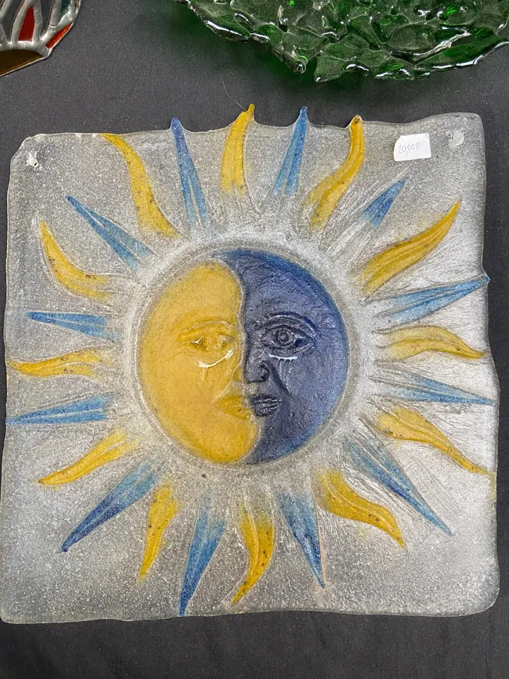
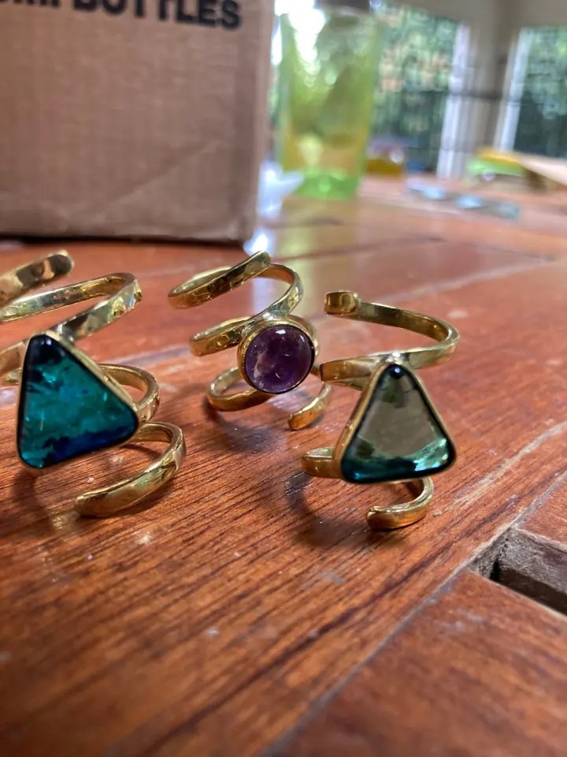
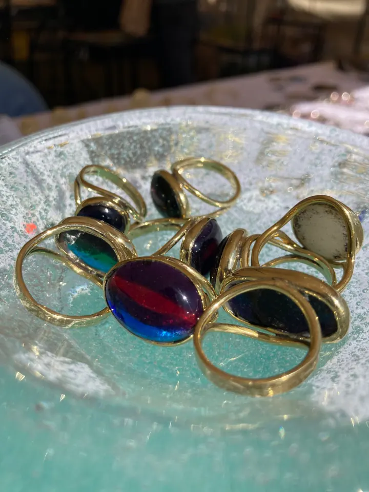

Nakshi Glass
From founder-dependent operations to a more systematic growth engine
Nakshi Glass is an artisan business built around craftsmanship, relationships and a premium creative identity. The challenge was not simply "how do we market more?" It was understanding how the business could grow without becoming increasingly dependent on the founder's memory, personal relationships and day-to-day involvement.
The problem
Customer information, pricing logic, demand generation and business development were not yet operating as a connected system. The opportunity was to introduce more structure without stripping away what makes the business valuable in the first place.
My approach
- Customer & business data What information already exists, and what could it tell us?
- Pricing & value How is value currently understood and communicated?
- B2B & B2C growth Where can repeatable demand come from?
- Digital presence How easily can a potential customer discover, understand and trust the business?
- CRM & reporting What needs to be captured so decisions are based on something more than memory?
 Craft: the part the system has to protect
Premium creative identity
Craft: the part the system has to protect
Premium creative identity
Direction
The goal is not to turn an artisan business into a machine. It is to build enough structure around the craft that the business can grow without losing its identity.




